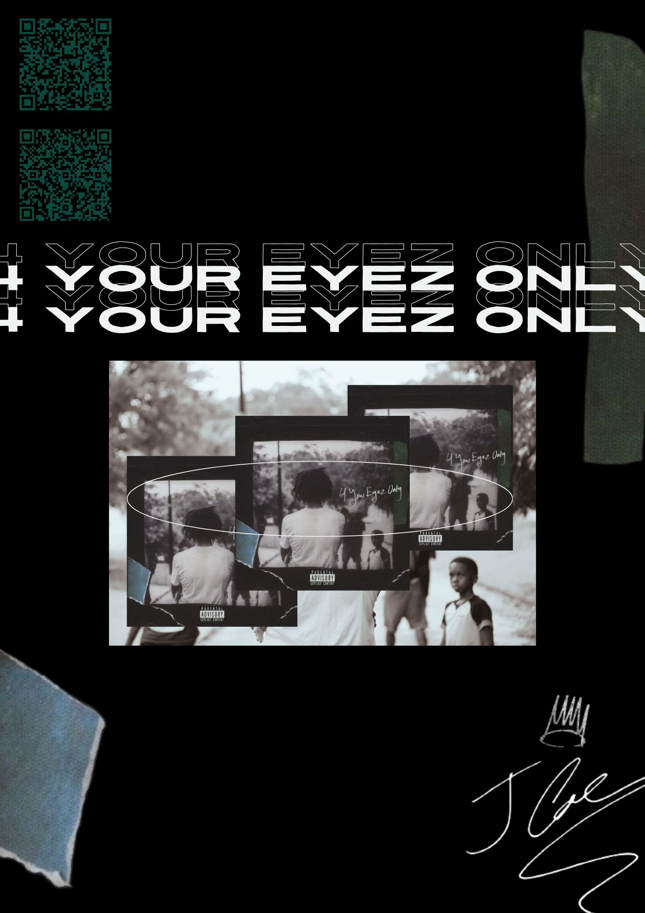
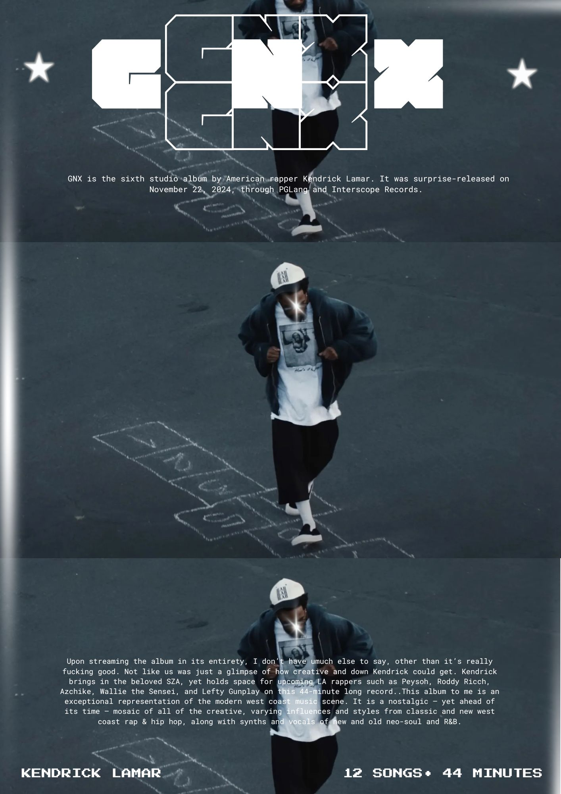
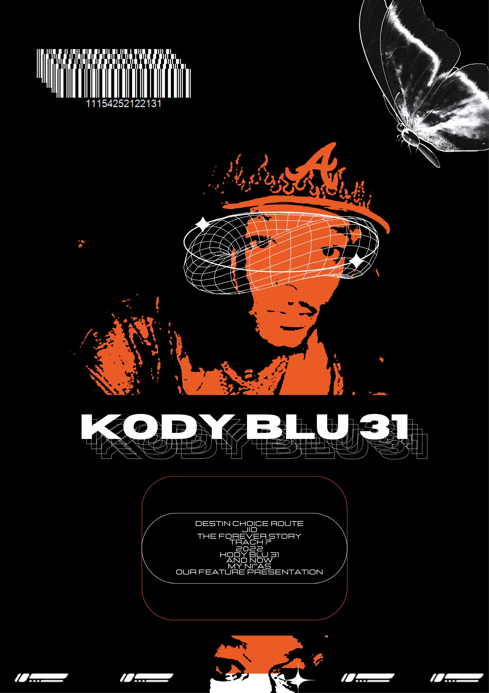
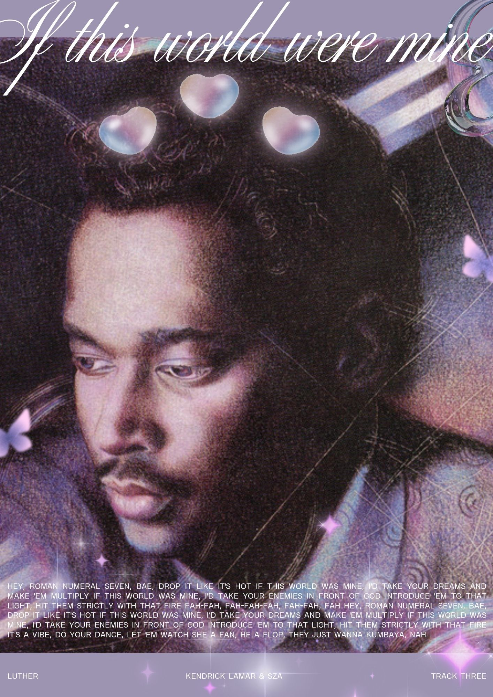
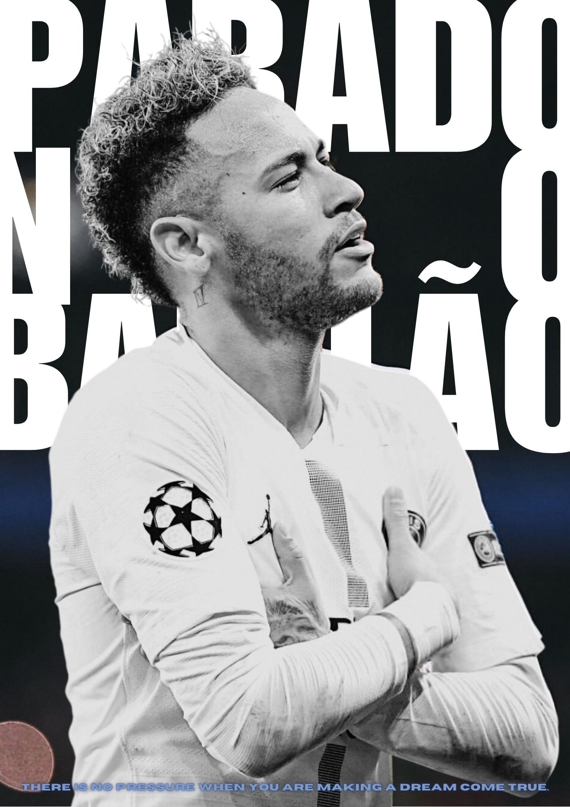
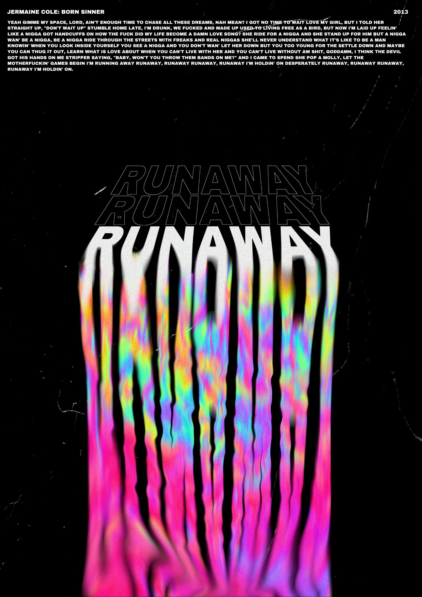

Home
Graphic Design
Branding
Social Media
Presentation
Video Editing
Contact
Graphic Design
as visual narratives

4 Your Eyez Only
Personal memory and family history layered through repetition and framing.

GNX
Movement captured across time through repetition and slowed progression.

Kody Blu 31
Identity expressed through bold symbolism and graphic contrast.

Luther
Soft texture and lighting used to convey intimacy and vulnerability.

Parado No Bailão
Scale and typography emphasize stillness, presence, and confidence.

Runaway
Distortion and color create a sense of motion and emotional release.